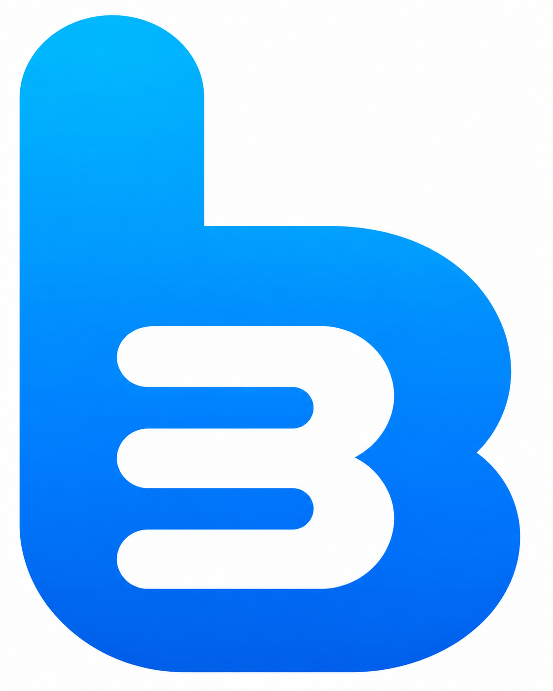
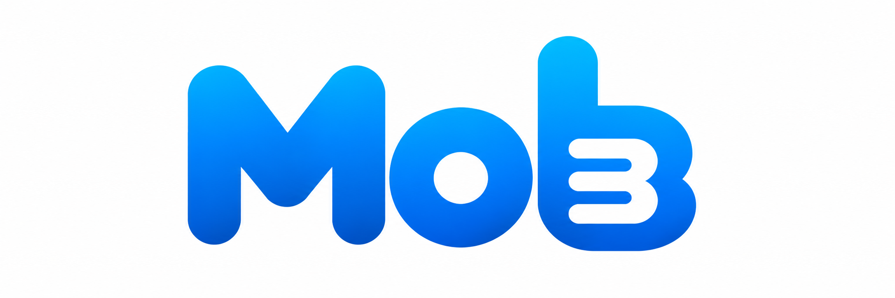

Wave BlueRGB 2 · 181 · 254
#02B5FEMOB BRAND IDENTITY SYSTEM
부산의 콘텐츠와 좋은 반응을 모으는
Mob의 로고 및 브랜드 사용 가이드

COLLECT · CONNECT · REACTBRAND IDENTITY
COLLECT BUSAN
Mob은 ‘모은다’는 의미에서 출발한 부산 콘텐츠 브랜드입니다. 부산의 바다를 중심으로 다양한 장소, 정보, 경험을 발견하고 SNS에서 즐길 수 있는 콘텐츠로 엮습니다.
PRIMARY LOGO

부드러운 곡선과 이어지는 형태는 부산의 장소와 사람, 반응이 콘텐츠 안에서 연결되는 모습을 나타냅니다.
SYMBOL
b = BUSAN + GOOD REACTION
알파벳 b 안에 손가락을 올린 따봉의 실루엣을 담았습니다. 부산의 콘텐츠를 모으는 동시에, 콘텐츠를 본 사람들의 좋은 반응까지 모은다는 의미입니다.
COLOR
로고 원본에서 추출한 블루를 중심으로 부산의 바다와 선명한 디지털 감각을 표현합니다.
#02B5FE#018AFE#006AF4#0A234A#F3F6F8LOGO SYSTEM
웹사이트 첫 화면, 프로젝트 표지, 공식 소개처럼 Mob의 이름을 분명히 전달해야 하는 영역에 사용합니다.
SNS 프로필, 앱 아이콘, 썸네일과 워터마크처럼 작은 화면에서 브랜드를 각인할 때 사용합니다.
LOGO USAGE
로고 높이의 1× 이상을 사방 여백으로 확보합니다.
형태와 그라데이션이 선명하게 보이는 크기를 유지합니다.
로고의 고유한 인상을 지키기 위해 아래 방식은 사용하지 않습니다.
비율 임의 변경
회전 및 기울임
임의 컬러 적용
복잡한 배경 위 배치
BACKGROUND USAGE
기본 사용 · 원본 로고
화이트 시그니처 블록 사용
고대비 영역 안에서 사용
COLLECT BUSAN · COLLECT GOOD REACTIONS
Mob부산의 다음 장면을 모읍니다.